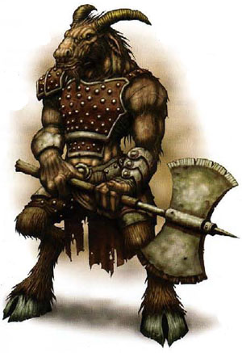

| Climate/Terrain | Colline (Montagne e Foreste temperate) |
| Frequency | Uncommon (Rare) |
| Organization | Branco |
| Activity Cycle | Any |
| Diet | Omnivore |
| Intelligence | Average (8) 8 Punti Combattimento |
| Treasure | Vedi sotto |
| Alignment | Lawful Neutral |
| No. Appearing | 2d3 |
| Armor Class | 5 |
| Movement | 12 |
| Hit Dice | 3 + 4 |
| Thac0 | 17 |
| No. of Attacks | 1 arma |
| Damage / Attacks | Variabile + 1 (per la forza) |
| Special Attacks | Vedi sotto |
| Special Defenses | Vedi sotto |
| Magic Resistance | Nessuna |
| Size | Medium (alto 1.90 m.) |
| Morale | Elite (13) |
| XP value | 175 |
Descrizione
Il nome reale dei Goatfolk (letteralmente popolo-capra) è Ibixian ma costoro sono chiamati dagli umani nel primo modo. Si tratta di umanoidi di dimensioni medie che raggiungono quasi i due metri di altezza per un peso di 250 libbre (125 kg.). Come i satiri hanno zampe da capra ma anche la loro testa è molto caprina, inoltre hanno un fisico molto robusto. Le statistiche medie di un Ibixian sono le seguenti: Forza 16, Intelligenza 8, Saggezza 8, Costituzione 14, Carisma 10, Destrezza 11
Combat
Gli
Ibixian sono fieri combattenti che amano combattere in corpo a corpo utilizzando
armi a due mani (ottenendo un bonus di +1 al danno per la loro forza). Per
determinare l'arma utilizzata da un Ibixian tirare
1d6 e consultare la
seguente tabella:
1-2
Two Handed Battle Axe (acciaio) Iniziativa +9, Danni 1d10 (taglio)
3
Great Mace (metallo) Iniziativa +8, Danni 1d8+1 (botta)
4
Footman's Pick (metallo) Iniziativa +4, Danni 1d8+1 (punta)
5
Voulge (polearm, metallo) Iniziativa +10, Danni 1d10 (taglio)
6
Glaive (polearm, metallo) Iniziativa +8, Danni 1d8 (taglio)
Gli Ibixian hanno
la seguente abilità speciale:
Ferocia del Branco
(costante):
Quando un Ibixian si trova in
combattimento entro 9 metri da un altro Ibixian (della cui presenza sia
ovviamente consapevole) lo stesso riceve un bonus di +1 al tiro per colpire e di +2 ai
danni (che si considera bonus dovuto alla forza) nonché un bonus di -2 a tutte
le sue prove per il morale.
Habitat/Society
Gli Ibixian sono esseri intelligenti che si adattano facilmente alle varie zone dove risiedono. Nonostante preferiscano vivere in zone collinose con la presenza di piante a basso fusto, costoro possono stanziarsi in zone montane (ad eccezione dei picchi innevati e dei ghiacciai) e nelle foreste temperate. Gli Ibixian si spostano in piccoli branchi per controllare il loro territorio e per cacciare, vivendo in mandrie che possono contare fino ad una cinquantina di esemplari adulti (((1d3+1)*10)+1d10) guidati da campioni guerrieri. I più forti ed intelligenti della loro razza possono divenire forti guerrieri (spesso della classe talentuosa berserker) e non è raro che una mandria sia controllata da maschio campione guerriero di livello quinto-settimo (1d3+4) con la presenza di alcuni combattenti (1d3+2) di livello primo-terzo (1d3). Nel 50% dei casi presso la mandria è presente anche uno sciamano Ibixian (come capo spirituale) di livello terzo-quinto (1d3+2) devoto alle Divinità della Natura. Presso il villaggio della mandria vi è anche il 33% di possibilità che vi siano 1d3+2 cani da guerra addestrati con compiti di guardia. Gli Ibixian sono un popolo stanziale, la mandria una volta trovato un territorio adeguato vi si stabilisce e lo difende. Gli Ibixian costruiscono villaggi rurali con terrapieni e capanne di terra compatta e paglia. Non praticando l'agricoltura, costoro vivono raccogliendo i frutti spontanei della terra, allevando (specialmente caprini ed ovini) e cacciando creature di grossa taglia. Sono abili nella lavorazione del cuoio e delle pelli con le quali costruiscono le loro pesanti corazze borchiate nonché nella lavorazione del ferro e dell'acciaio con il quale forgiano le loro armi. Il lato animalesco degli Ibixian li rende schivi e poco tolleranti con le altre razze con le quali non amano interagire. Costoro, infatti, comunemente scacciano in malo modo (ricorrendo anche con la forza) gli stranieri dal loro territorio e si limitano ad intrattenere con le altre razze unicamente le relazioni di cui hanno necessità per commerciare beni primari o per incrementare le loro conoscenze (se appartenenti ad una classe di personaggi).
Ecology
Gli Ibixian sono formidabili guerrieri dalla possente stazza e la loro ferocia in combattimento è conosciuta. Per tale motivo, nonostante vivano in mandrie numericamente limitate riescono ad imporsi ed occupare un loro territorio. Per la loro indole schiva e neutrale non hanno nemici abituali tra le altre razze che popolano il mondo di Arelia e possono trovarsi sporadicamente in conflitto con qualsiasi altra razza o civiltà. Quando una mandria di Ibixian contrasta un nemico troppo numeroso o forte per essere combattuto si sposta rapidamente in una zona più tranquilla. Gli Ibixian allevano spesso cani da guerra che portano con se nella caccia e nei pattugliamenti. Ogni branco di Ibixian che è incontrato ha, quindi, il 33% di essere accompagnato da 1d2 cani da guerra. Questi cani sono addestrati in modo tale da non intromettersi nei combattimenti corpo a corpo effettuati dagli Ibixian ma di difendere costoro da chi li minaccia da lontano (si pensi ad arcieri o utenti di magia) e di intervenire in caso di ritirata degli Ibixian per rallentare gli inseguitori.